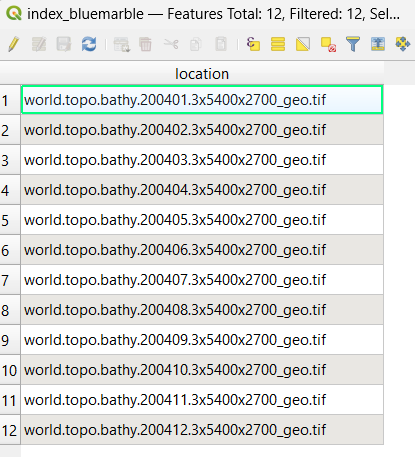
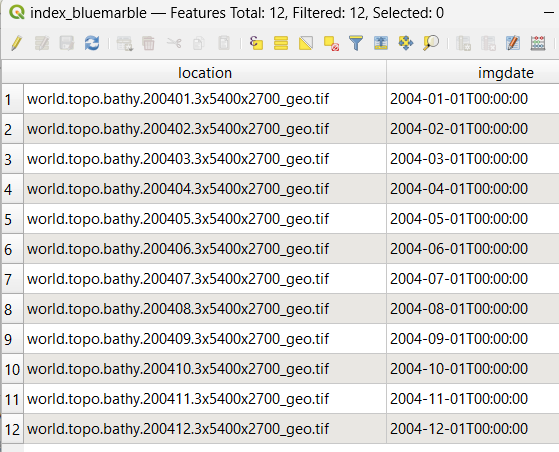
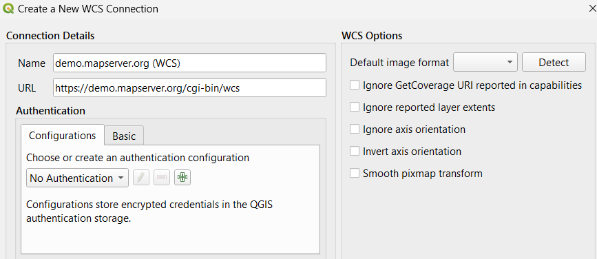
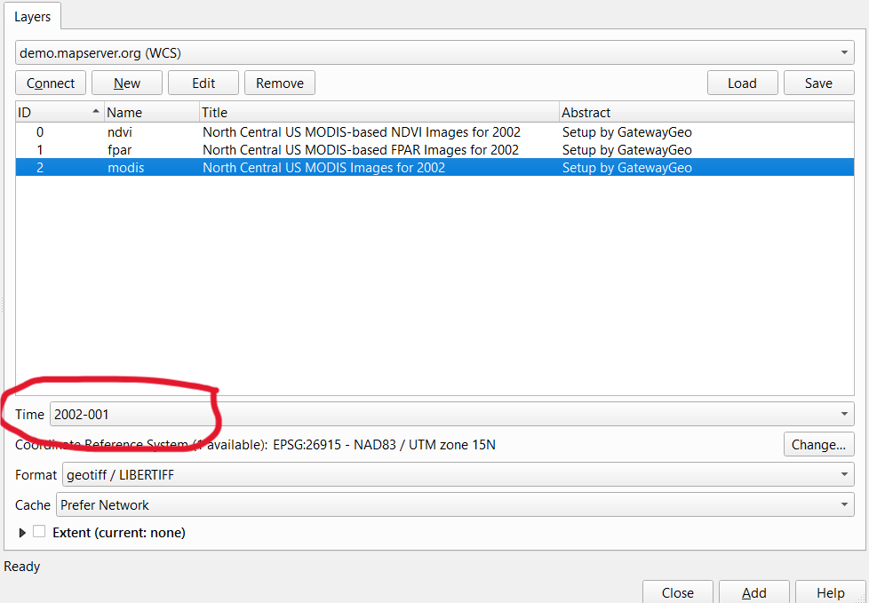

WCS Server¶
- Author:
Jeff McKenna
- Contact:
jmckenna at gatewaygeomatics.com
- Author:
Stephan Meissl
- Contact:
stephan.meissl at eox.at
- Author:
Fabian Schindler
- Contact:
fabian.schindler at eox.at
- Last Updated:
2026-04-20
Introduction¶
A WCS (or Web Coverage Service) allows for the publication of “coverages”: digital geospatial information representing space-varying phenomena. In the MapServer world it allows for unfiltered access to raster data. Conceptually it is easy think of WCS as a raster equivalent of WFS. The following documentation is based on the Open Geospatial Consortium’s (OGC) Web Coverage Service Interfaces Implementation Specification version 1.0.0.
Software Requirements¶
In order to enable MapServer to serve WCS data, it MUST be compiled against certain libraries:
PROJ: The reprojection library. Version 4.4.3 or greater is required.
GDAL: raster support library.
MapServer: version >= 4.4 (tested with 8.6.1 while updating this document)
For WCS 1.1.x support (since MapServer 5.2) and WCS 2.0 support (since MapServer 6.0) there is an additional requirement:
libxml2: An xml parser and generation library.
(Unix users should refer to the Compiling on Unix document for any compiling instructions, and Windows users might want to use MS4W, which comes ready with WCS support)
You can check that your mapserv executable includes WCS server support by using the “-v” command-line switch and look for “SUPPORTS=WCS_SERVER”.
Example 1. On Unix:
$ ./mapserv -v
MapServer version 8.7-dev PROJ version 9.8 GDAL version 3.12
OUTPUT=PNG OUTPUT=JPEG OUTPUT=KML SUPPORTS=PROJ SUPPORTS=AGG
SUPPORTS=FREETYPE SUPPORTS=CAIRO SUPPORTS=SVG_SYMBOLS SUPPORTS=RSVG
SUPPORTS=ICONV SUPPORTS=FRIBIDI SUPPORTS=WMS_SERVER SUPPORTS=WMS_CLIENT
SUPPORTS=WFS_SERVER SUPPORTS=WFS_CLIENT SUPPORTS=WCS_SERVER
SUPPORTS=SOS_SERVER SUPPORTS=OGCAPI_SERVER SUPPORTS=GEOS SUPPORTS=PBF
INPUT=JPEG INPUT=POSTGIS INPUT=OGR INPUT=GDAL INPUT=SHAPEFILE
INPUT=FLATGEOBUF
Example 2. On Windows:
C:\ms4w> mapserv -v
MapServer version 8.7-dev (MS4W 5.2.0) PROJ version 9.9
GDAL version 3.13 OUTPUT=PNG OUTPUT=JPEG OUTPUT=KML SUPPORTS=PROJ
SUPPORTS=AGG SUPPORTS=FREETYPE SUPPORTS=CAIRO SUPPORTS=SVG_SYMBOLS
SUPPORTS=SVGCAIRO SUPPORTS=ICONV SUPPORTS=FRIBIDI SUPPORTS=WMS_SERVER
SUPPORTS=WMS_CLIENT SUPPORTS=WFS_SERVER SUPPORTS=WFS_CLIENT
SUPPORTS=WCS_SERVER SUPPORTS=SOS_SERVER SUPPORTS=OGCAPI_SERVER
SUPPORTS=FASTCGI SUPPORTS=THREADS SUPPORTS=GEOS SUPPORTS=PBF INPUT=JPEG
INPUT=POSTGIS INPUT=OGR INPUT=GDAL INPUT=SHAPEFILE INPUT=FLATGEOBUF
Configuring Your Mapfile to Serve WCS Layers¶
Similar to configuring WMS and WFS support, WCS publishing in MapServer is enabled by adding certain magic METADATA keyword/value pairs to a .map file.
MapServer will serve and include in its WCS capabilities only the layers that meet the following conditions:
Data source is a raster, which is processed using GDAL (e.g GeoTIFF, NetCDF, …)
LAYER NAME must be set
LAYER TYPE is set to RASTER
WEB metadata or LAYER metadata “wcs_enable_request” must be set (see MS RFC 67)
WEB metadata “wcs_label” must be set
LAYER metadata “wcs_label” must be set
LAYER metadata “wcs_rangeset_name” must be set
LAYER metadata “wcs_rangeset_label” must be set
LAYER PROJECTION must be set (which tells MapServer the source projection of the raster), and must also set the map-level PROJECTION (which specifies the output projection)
Example WCS Server Mapfile¶
The following is an example of a simple WCS Server mapfile (that servers one single raster). Note the comments for the required parameters.
MAP
NAME "WCS_server"
STATUS ON
SIZE 400 300
SYMBOLSET "../etc/symbols.txt"
EXTENT -6661783 2801107 11407237 8055791 #for EPSG:3857, but useful only when testing mapfile through map2img (with WCS)
UNITS METERS
SHAPEPATH "./data"
IMAGECOLOR 255 255 255
FONTSET "../etc/fonts.txt"
CONFIG "MS_ERRORFILE" "/ms4w/tmp/ms_tmp/ms_error.txt"
DEBUG 5
WEB
IMAGEPATH "/ms4w/tmp/ms_tmp/"
IMAGEURL "/ms_tmp/"
METADATA
"wcs_label" "WCS Demo Server" ### required
"wcs_description" "Some text description of the service" ### recommended
"wcs_onlineresource" "http://127.0.0.1/cgi-bin/mapserv.exe?MAP=/ms4w/apps/wcs-demo/wcs.map" ### recommended
"wcs_service_onlineresource" "http://127.0.0.1/cgi-bin/mapserv.exe?MAP=/ms4w/apps/wcs-demo/wcs.map" ### recommended
"ows_title" "WCS Demo Server for MapServer" ### recommended
"ows_abstract" "This demonstration server showcases MapServer and its OGC support." ### recommended
"ows_contactperson" "me"
"ows_contactposition" "VIP"
"ows_contactorganization" "FOSS4G"
"ows_contactelectronicmailaddress" "blah@blah.com"
"ows_contactvoicetelephone" "+xx-xxx-xxx-xxxx"
"ows_contactfacsimiletelephone" "+xx-xxx-xxx-xxxx"
"ows_role" "developer"
"ows_addresstype" "postal"
"ows_address" "1234 Main Street"
"ows_city" "xxxxx"
"ows_stateorprovince" "xx"
"ows_postcode" "xxx xxx"
"ows_country" "Canada"
"ows_fees" "None"
"ows_accessconstraints" "None"
"ows_hoursofservice" "xxx"
"ows_contactinstructions" "xxx"
"wcs_keywordlist" "WCS,MODIS,NDVI,MapServer"
"wcs_enable_request" "*" ### required
END
END
#output projection
PROJECTION
"init=epsg:3857" #web mercator, see https://spatialreference.org/ref/epsg/3857/
END
LAYER
NAME "bluemarble-2004"
METADATA
"wcs_label" "Elevation/Bathymetry" ### required
"wcs_rangeset_name" "My range" ### required to support DescribeCoverage request
"wcs_rangeset_label" "My label" ### required to support DescribeCoverage request
"wcs_formats" "image/tiff" ### required
"ows_extent" "-180 -90 180 90" ### recommended
END
TYPE RASTER ### required
STATUS ON
DATA "world.topo.bathy.200401.3x5400x2700_geo.tif"
#the data's source projection
PROJECTION
"init=epsg:4326" #latlong, see https://spatialreference.org/ref/epsg/4326/
END
DEBUG 5
END # layer
END # mapfile
Output Formats¶
The raster formats supported by MapServer WCS are determined by the wcs_formats metadata item on the LAYER. This should contain a space separated list of OUTPUTFORMAT driver names separated by spaces. If absent, all raster OUTPUTFORMATs are allowed.
WCS is a “raw data” oriented format. So it often most suitable to use it with format using the BYTE, INT16 and FLOAT32 IMAGEMODEs with GDAL related output formats rather than the built-in “rendering oriented” output formats. By default the only GDAL format driver defined is the GTiff driver. The following are example output format declarations utilizing the raw image modes:
OUTPUTFORMAT
NAME GEOTIFF_16
DRIVER "GDAL/GTiff"
MIMETYPE "image/tiff"
IMAGEMODE FLOAT32
EXTENSION "tif"
END
OUTPUTFORMAT
NAME AAIGRID
DRIVER "GDAL/AAIGRID"
MIMETYPE "image/x-aaigrid"
IMAGEMODE INT16
EXTENSION "grd"
FORMATOPTION "FILENAME=result.grd"
END
The FORMATOPTION FILENAME defines the preferred name of the file returned from WCS GetCoverage requests.
Tip
The MapServer WCS Use Cases document has more examples of formats (for both input and output).
Spatio/Temporal Indexes¶
MapServer has long supported a method of breaking a dataset into smaller, more manageable pieces or tiles. In this case a shapefile is used to store the boundary of each tile, and an attribute holds the location of the actual data. Within a MapServer mapfile the layer keywords TILEINDEX and TILEITEM are used to activate tiling.
Consider the example where an organization wants to serve hundreds or even thousands of MODIS scenes in GeoTIFF format. Five images cover the spatial extent and each group of five varies by date of acquisition. This turns out to be a fairly common scenario for organizations interested in WCS, one that the existing tiling support does not adequately address. In previous versions of MapServer a developer would have to create one tileindex and one layer definition for each group of five images. This could result in configuration files that are prohibitively long and difficult to manage.
In order to more efficiently support the WCS specification a new tiling scheme has been implemented within MapServer. One that supports spatial sub-setting, but also ad hoc sub-setting based on any attributes found within tileindex. In many cases a temporal attribute could be used, but sub-setting is not limited to that case. The new scheme introduces the concept of tileindex layers, that is, a separate layer definition is used to describe the tile index dataset. With this we get all the benefits of any MapServer layer, most importantly we can apply MapServer filters to the data. Filters can be defined at runtime using MapServer CGI, MapScript or via the WCS server interface. The syntax for the layer using the index remains unchanged except that the value for Tile Indexes refers to the index layer instead of an external shapefile.
So, looking at the example above again we can reduce our MapServer configuration to two layer definitions, one for the tileindex and one for the imagery itself. Extracting a single date’s worth of imagery is now a matter of setting the appropriate filter within the tileindex layer.
Building Spatio-Temporal TileIndexes¶
Step 1: Create your spatial index
Taking the above example, the first step is to create the spatial index with the GDAL utility gdaltindex. Simply point gdaltindex at the directory containing the collection of images and it will build a shapefile index suitable for use with MapServer.
For example, the following command creates a shapefile index, for a folder that contains many GeoTIFF images:
gdaltindex -of "ESRI Shapefile" index_bluemarble.shp *.tif
Since GDAL 3.11 you can alternatively use the gdal program such as:
gdal raster index --of "ESRI Shapefile" *.tif index_bluemarble.shp
If you open that new spatial index in QGIS and then view its attributes, you’ll notice a single location field with all of the GeoTIFF filenames, such as:

Step 2: Execute shptree on your spatial index file
Use MapServer’s shptree utility to make it faster for MapServer to parse the index, with a command such as:
shptree index_bluemarble.shp
You should notice that a new .qix file was created.
Step 3: Add the temporal information to the index
The next step would be to add the temporal (time) information to that index.
You could either use QGIS again & manually add the time values to the index attributes (in a new string field such as imgdate), or write a script to do that: the pseudo code would look something like:
open the index .dbf file for reading
create a new column to hold the image acquisition date
for each image; 1) extract the image acquisition date and 2) insert it into the new column
close the index .dbf file
Whatever you choose, the resulting attributes of your spatial index file may look like:

Mapfile: define your Spatio/Temporal TileIndexes¶
Step 1: Setup your tileindex LAYER
The tileindex layer is where you point to the tileindex file that you recently generated, and also define the FILTER for time requests, and setup validation for that time format.
Note
You must setup a VALIDATION block for MapServer to properly pass the time values in the WCS request.
/* tileindex layer */
LAYER
NAME "bluemarble-idx"
TYPE TILEINDEX
DATA "index_bluemarble.shp"
FILTER ("[imgdate]" = '%time%')
VALIDATION
#handle time values of format YYYY-MM-DDThh:mm:ss
'time' '^[0-9]{4}-[0-9]{2}-[0-9]{2}T[0-9]{2}:[0-9]{2}:[0-9]{2}$'
END
PROJECTION
"init=epsg:4326"
END
END
Step 2: Setup your raster images LAYER
Now you can setup your raster images layer, that will point to the other tileindex layer.
Note
You must list all possible time values in the “wcs_timeposition” metadata.
/* raster layer, that points to the above tileindex layer */
LAYER
NAME "bluemarble-2004"
METADATA
"wcs_label" "Elevation/Bathymetry" ### required
"wcs_description" "My WCS layer" ### recommended
"wcs_rangeset_name" "My range" ### required to support DescribeCoverage request
"wcs_rangeset_label" "My label" ### required to support DescribeCoverage request
"wcs_formats" "image/tiff" ### required
"ows_extent" "-180 -90 180 90" ### recommended
"wcs_resolution" "0.066666666700000 0.066666666700000" ### required
"wcs_nativeformat" "raw binary"
"wcs_bandcount" "3"
"wcs_timeposition" "2004-01-01T00:00:00,2004-02-01T00:00:00,2004-03-01T00:00:00,2004-04-01T00:00:00,2004-05-01T00:00:00,2004-06-01T00:00:00,2004-07-01T00:00:00,2004-08-01T00:00:00,2004-09-01T00:00:00,2004-10-01T00:00:00,2004-11-01T00:00:00,2004-12-01T00:00:00" ### required
"wcs_timeitem" "imgdate" ### required
"wcs_rangeset_axes" "bands"
"wcs_rangeset_label" "Bands"
"wcs_rangeset_name" "Bands"
END
TYPE RASTER ### required
STATUS ON
TILEINDEX "bluemarble-idx"
TILEITEM "location"
#the data's source projection
PROJECTION
"init=epsg:4326" #latlong, see https://spatialreference.org/ref/epsg/4326/
END
DEBUG 5
END # layer
Example WCS Server Mapfile with Spatial/Temporal¶
The following is an example of a WCS Server mapfile that serves raster images by pointing to a separate tileindex layer. Note the comments for the required parameters.
MAP
NAME "WCS_server"
STATUS ON
SIZE 400 300
SYMBOLSET "../etc/symbols.txt"
EXTENT -6661783 2801107 11407237 8055791 #for EPSG:3857, but useful only when testing mapfile through map2img (with WCS)
UNITS METERS
SHAPEPATH "./data"
IMAGECOLOR 255 255 255
FONTSET "../etc/fonts.txt"
CONFIG "MS_ERRORFILE" "/ms4w/tmp/ms_tmp/ms_error.txt"
DEBUG 5
WEB
IMAGEPATH "/ms4w/tmp/ms_tmp/"
IMAGEURL "/ms_tmp/"
METADATA
"wcs_label" "WCS Demo Server" ### required
"wcs_description" "Some text description of the service" ### recommended
"wcs_onlineresource" "http://127.0.0.1/cgi-bin/mapserv.exe?MAP=/ms4w/apps/wcs-demo/wcs-tiled.map" ### recommended
"wcs_service_onlineresource" "http://127.0.0.1/cgi-bin/mapserv.exe?MAP=/ms4w/apps/wcs-demo/wcs-tiled.map" ### recommended
"ows_title" "WCS Demo Server for MapServer" ### recommended
"ows_abstract" "This demonstration server showcases MapServer and its OGC support." ### recommended
"ows_contactperson" "me"
"ows_contactposition" "VIP"
"ows_contactorganization" "FOSS4G"
"ows_contactelectronicmailaddress" "blah@blah.com"
"ows_contactvoicetelephone" "+xx-xxx-xxx-xxxx"
"ows_contactfacsimiletelephone" "+xx-xxx-xxx-xxxx"
"ows_role" "developer"
"ows_addresstype" "postal"
"ows_address" "1234 Main Street"
"ows_city" "xxxxx"
"ows_stateorprovince" "xx"
"ows_postcode" "xxx xxx"
"ows_country" "Canada"
"ows_fees" "None"
"ows_accessconstraints" "None"
"ows_hoursofservice" "xxx"
"ows_contactinstructions" "xxx"
"wcs_keywordlist" "WCS,MODIS,NDVI,MapServer"
"wcs_enable_request" "*" ### required
END
END
#output projection
PROJECTION
"init=epsg:3857" #web mercator, see https://spatialreference.org/ref/epsg/3857/
END
/* tileindex layer */
LAYER
NAME "bluemarble-idx"
TYPE TILEINDEX
DATA "index_bluemarble.shp"
FILTER ("[imgdate]" = '%time%')
VALIDATION
#handle time values of format YYYY-MM-DDThh:mm:ss
'time' '^[0-9]{4}-[0-9]{2}-[0-9]{2}T[0-9]{2}:[0-9]{2}:[0-9]{2}$'
END
PROJECTION
"init=epsg:4326"
END
END
/* raster layer, that points to the above tileindex layer */
LAYER
NAME "bluemarble-2004"
METADATA
"wcs_label" "Elevation/Bathymetry" ### required
"wcs_description" "My WCS layer" ### recommended
"wcs_rangeset_name" "My range" ### required to support DescribeCoverage request
"wcs_rangeset_label" "My label" ### required to support DescribeCoverage request
"wcs_formats" "image/tiff" ### required
"ows_extent" "-180 -90 180 90" ### recommended
"wcs_resolution" "0.066666666700000 0.066666666700000" ### required
"wcs_nativeformat" "raw binary"
"wcs_bandcount" "3"
"wcs_timeposition" "2004-01-01T00:00:00,2004-02-01T00:00:00,2004-03-01T00:00:00,2004-04-01T00:00:00,2004-05-01T00:00:00,2004-06-01T00:00:00,2004-07-01T00:00:00,2004-08-01T00:00:00,2004-09-01T00:00:00,2004-10-01T00:00:00,2004-11-01T00:00:00,2004-12-01T00:00:00" ### required
"wcs_timeitem" "imgdate" ### required
"wcs_rangeset_axes" "bands"
"wcs_rangeset_label" "Bands"
"wcs_rangeset_name" "Bands"
END
TYPE RASTER ### required
STATUS ON
TILEINDEX "bluemarble-idx"
TILEITEM "location"
#the data's source projection
PROJECTION
"init=epsg:4326" #latlong, see https://spatialreference.org/ref/epsg/4326/
END
DEBUG 5
END # layer
END # mapfile
Test Your WCS 1.0 Server¶
Validate the Capabilities Metadata¶
OK, now that we’ve got a mapfile, we have to check the XML capabilities returned by our server to make sure nothing is missing.
Using a web browser, access your server’s online resource URL to which you add the parameters “SERVICE=WCS&VERSION=1.0.0&REQUEST=GetCapabilities” to the end, e.g.
http://my.host.com/cgi-bin/mapserv?map=mywcs.map&SERVICE=WCS
&VERSION=1.0.0&REQUEST=GetCapabilities
Note
It is strongly recommended to review the security steps for the MAP= call to the MapServer executable, by setting MS_MAP_PATTERN or MS_MAP_NO_PATH or hiding the MAP= parameter on public servers, as recommended in the document Limit Mapfile Access. All possible environment variables to secure your server are listed in Environment Variables.
If you get an error message in the XML output then take necessary actions. Common problems and solutions are listed in the FAQ at the end of this document.
Tip
To see MapServer error messages as you execute WCS requests, be sure to set the CONFIG “MS_ERRORFILE” parameter, as well as DEBUG 5 at in your LAYER, such as:
MAP ... CONFIG "MS_ERRORFILE" "/ms4w/tmp/ms_error.txt" DEBUG 5 ... LAYER DEBUG 5 ... END END
If everything went well, you should have a complete XML capabilities document. Search it for the word “WARNING”, as MapServer inserts XML comments starting with “<!–WARNING: “ in the XML output if it detects missing mapfile parameters or metadata items.
Note that when a request happens, it is passed through WMS, WFS, and WCS in MapServer (in that order) until one of the services respond to it.
Here is a working example of a GetCapabilities request:
Test With a DescribeCoverage Request¶
OK, now that we know that our server can produce a valid XML GetCapabilities response we should test the DescribeCoverage request. The DescribeCoverage request lists more information about specific coverage offerings.
Using a web browser, access your server’s online resource URL to which you add the parameters “SERVICE=WCS&VERSION=1.0.0&REQUEST=DescribeCoverage&COVERAGE=layername” to the end, e.g.
http://my.host.com/cgi-bin/mapserv?map=mywcs.map&SERVICE=WCS
&VERSION=1.0.0&REQUEST=DescribeCoverage&COVERAGE=bathymetry
Here is a working example of a DescribeCoverage request:
Test With a GetCoverage Request¶
The GetCoverage request allows for the retrieval of coverages in a specified output format to the client.
The following is a list of the required GetCoverage parameters according to the WCS spec:
VERSION=version: Request version
REQUEST=GetCoverage: Request name
COVERAGE=coverage_name: Name of an available coverage, as stated in the GetCapabilities
CRS=epsg_code: Coordinate Reference System in which the request is expressed. (you can search for EPSG codes on spatialreference.org)
BBOX=minx,miny,maxx,maxy: Bounding box corners (lower left, upper right) in CRS units. One of BBOX or TIME is required.
TIME=time1,time2: Request a subset corresponding to a time. One of BBOX or TIME is required..
WIDTH=output_width: Width in pixels of map image. One of WIDTH/HEIGHT or RESX/Y is required.
HEIGHT=output_height: Height in pixels of map image. One of WIDTH/HEIGHT or RESX/Y is required.
RESX=x: When requesting a georectified grid coverage, this requests a subset with a specific spatial resolution. One of WIDTH/HEIGHT or RESX/Y is required.
RESY=y: When requesting a georectified grid coverage, this requests a subset with a specific spatial resolution. One of WIDTH/HEIGHT or RESX/Y is required.
FORMAT=output_format: Output format of map, as stated in the DescribeCoverage response.
The following are optional GetCoverage parameters according to the WCS spec:
RESPONSE_CRS=epsg_code: Coordinate Reference System in which to express coverage responses.
So to follow our above examples, a valid DescribeCoverage request would look like:
http://my.host.com/cgi-bin/mapserv?map=mywcs.map&SERVICE=WCS
&VERSION=1.0.0&REQUEST=GetCoverage&coverage=bathymetry
&CRS=EPSG:3978&BBOX=-2200000,-712631,3072800,3840000&WIDTH=3199
&HEIGHT=2833&FORMAT=GTiff
Here is a working example of a GetCoverage request (note that a 350KB tif is being requested, which should automatically be downloaded locally):
Test Using GDAL Utilities¶
A nice way to test your new WCS service is through the GDAL commandline.
Example 1: Get information on a MapServer WCS service:
gdalinfo -oo CLEAR_CACHE=YES WCS:"https://demo.mapserver.org/cgi-bin/wcs?VERSION=1.0.0"
Since GDAL 3.11 you can alternatively use the gdal program such as:
gdal info --oo CLEAR_CACHE=YES WCS:"https://demo.mapserver.org/cgi-bin/wcs?VERSION=1.0.0"
Driver: WCS/OGC Web Coverage Service
Files: C:\Users\jeffm\.gdal\wcs_cache\bGtUw.aux.xml
Size is 512, 512
Origin = (0.000000000000000,0.000000000000000)
Pixel Size = (1.000000000000000,1.000000000000000)
Metadata:
WCS_GLOBAL#keywords=WCS,MODIS,NDVI
WCS_GLOBAL#Service.accessConstraints=None
WCS_GLOBAL#Service.description=Setup by GatewayGeo
WCS_GLOBAL#Service.fees=None
WCS_GLOBAL#Service.label=WCS Demo Server for MapServer, setup by GatewayGeo
WCS_GLOBAL#Service.name=MapServer WCS
WCS_GLOBAL#Service.responsibleParty.contactInfo.address.administrativeArea=Nova Scotia
WCS_GLOBAL#Service.responsibleParty.contactInfo.address.city=Lunenburg
WCS_GLOBAL#Service.responsibleParty.contactInfo.address.country=Canada
WCS_GLOBAL#Service.responsibleParty.contactInfo.address.deliveryPoint=1101 Blue Rocks Road
WCS_GLOBAL#Service.responsibleParty.contactInfo.address.electronicMailAddress=info@gatewaygeomatics.com
WCS_GLOBAL#Service.responsibleParty.contactInfo.address.postalCode=B0J 2C0
WCS_GLOBAL#Service.responsibleParty.contactInfo.phone.facsimile=+xx-xxx-xxx-xxxx
WCS_GLOBAL#Service.responsibleParty.contactInfo.phone.voice=+xx-xxx-xxx-xxxx
WCS_GLOBAL#Service.responsibleParty.individualName=Jeff McKenna
WCS_GLOBAL#Service.responsibleParty.organisationName=GatewayGeo
WCS_GLOBAL#Service.responsibleParty.positionName=Director
WCS_GLOBAL#updateSequence=0
WCS_GLOBAL#version=1.0.0
Subdatasets:
SUBDATASET_1_NAME=https://demo.mapserver.org/cgi-bin/wcs?VERSION=1.0.0&COVERAGE=ndvi
SUBDATASET_1_DESC=North Central US MODIS-based NDVI Images for 2002
SUBDATASET_2_NAME=https://demo.mapserver.org/cgi-bin/wcs?VERSION=1.0.0&COVERAGE=fpar
SUBDATASET_2_DESC=North Central US MODIS-based FPAR Images for 2002
SUBDATASET_3_NAME=https://demo.mapserver.org/cgi-bin/wcs?VERSION=1.0.0&COVERAGE=modis
SUBDATASET_3_DESC=North Central US MODIS Images for 2002
Corner Coordinates:
Upper Left ( 0.0000000, 0.0000000)
Lower Left ( 0.000, 512.000)
Upper Right ( 512.000, 0.000)
Lower Right ( 512.000, 512.000)
Center ( 256.000, 256.000)
Tip
You can get debugging info from GDAL by first setting the CPL_DEBUG environment variable (useful to see the exact GetCapabilities or GetCoverage requests), before re-running your gdal command, such as:
Windows CMD:
SET CPL_DEBUG=ON
Windows PowerShell:
$Env:CPL_DEBUG = "ON"
Linux:
export CPL_DEBUG=ON
HTTP: Fetch(https://demo.mapserver.org/cgi-bin/wcs?SERVICE=WCS&REQUEST=GetCoverage&VERSION=1.0.0&COVERAGE=modis&FORMAT=geotiff&BBOX=159457,5500645,160457,5501645&WIDTH=2&HEIGHT=2&CRS=EPSG:26915&time=2002-001)
WCS: GDALOpenResult() on content-type: image/tiff
GDAL: GDALOpen(/vsimem/.#!HIDDEN!#./1/wcsresult.dat, this=037EDF50) succeeds as GTiff.
GDAL: GDALClose(/vsimem/.#!HIDDEN!#./1/wcsresult.dat, this=037EDF50)
GDAL: GDALOpen(C:\Users\jeffm\.gdal\wcs_cache\FnoLB.xml, this=01956EA0) succeeds as WCS.
0GDAL: GDAL_CACHEMAX = 102 MB
GDAL: GDALDatasetCopyWholeRaster(): 2481*512 swaths, bInterleave=1
WCS: DirectRasterIO(0,0,2481,512) -> (2481,512) (3 bands)
HTTP: Fetch(https://demo.mapserver.org/cgi-bin/wcs?SERVICE=WCS&REQUEST=GetCoverage&VERSION=1.0.0&COVERAGE=modis&FORMAT=geotiff&BBOX=159457,5245645,1399957,5501645&WIDTH=2481&HEIGHT=512&CRS=EPSG:26915&time=2002-001&bands=1,2,3)
WCS: GDALOpenResult() on content-type: image/tiff
GDAL: GDALOpen(/vsimem/.#!HIDDEN!#./2/wcsresult.dat, this=037EE738) succeeds as GTiff.
GDAL: GDALClose(/vsimem/.#!HIDDEN!#./2/wcsresult.dat, this=037EE738)
...10...20..WCS: DirectRasterIO(0,512,2481,512) -> (2481,512) (3 bands)
HTTP: Fetch(https://demo.mapserver.org/cgi-bin/wcs?SERVICE=WCS&REQUEST=GetCoverage&VERSION=1.0.0&COVERAGE=modis&FORMAT=geotiff&BBOX=159457,4989645,1399957,5245645&WIDTH=2481&HEIGHT=512&CRS=EPSG:26915&time=2002-001&bands=1,2,3)
WCS: GDALOpenResult() on content-type: image/tiff
GDAL: GDALOpen(/vsimem/.#!HIDDEN!#./3/wcsresult.dat, this=037EE738) succeeds as GTiff.
GDAL: GDALClose(/vsimem/.#!HIDDEN!#./3/wcsresult.dat, this=037EE738)
.30...40...50WCS: DirectRasterIO(0,1024,2481,512) -> (2481,512) (3 bands)
HTTP: Fetch(https://demo.mapserver.org/cgi-bin/wcs?SERVICE=WCS&REQUEST=GetCoverage&VERSION=1.0.0&COVERAGE=modis&FORMAT=geotiff&BBOX=159457,4733645,1399957,4989645&WIDTH=2481&HEIGHT=512&CRS=EPSG:26915&time=2002-001&bands=1,2,3)
WCS: GDALOpenResult() on content-type: image/tiff
GDAL: GDALOpen(/vsimem/.#!HIDDEN!#./4/wcsresult.dat, this=037EE738) succeeds as GTiff.
GDAL: GDALClose(/vsimem/.#!HIDDEN!#./4/wcsresult.dat, this=037EE738)
...60...70..WCS: DirectRasterIO(0,1536,2481,271) -> (2481,271) (3 bands)
Example 2: Get information on specific MapServer WCS layer:
The following gets information on the ‘modis’ raster layer in a MapServer WCS service:
gdalinfo -oo CLEAR_CACHE=YES WCS:"https://demo.mapserver.org/cgi-bin/wcs?VERSION=1.0.0&COVERAGE=modis"
Since GDAL 3.11 you can alternatively use the gdal program such as:
gdal info --oo CLEAR_CACHE=YES WCS:"https://demo.mapserver.org/cgi-bin/wcs?VERSION=1.0.0&COVERAGE=modis"
Driver: WCS/OGC Web Coverage Service
Files: C:\Users\jeffm\.gdal\wcs_cache\lZCmz.xml
C:\Users\jeffm\.gdal\wcs_cache\lZCmz.xml.aux.xml
Size is 2481, 1807
Coordinate System is:
PROJCRS["NAD83 / UTM zone 15N",
BASEGEOGCRS["NAD83",
DATUM["North American Datum 1983",
ELLIPSOID["GRS 1980",6378137,298.257222101,
LENGTHUNIT["metre",1]]],
PRIMEM["Greenwich",0,
ANGLEUNIT["degree",0.0174532925199433]],
ID["EPSG",4269]],
CONVERSION["UTM zone 15N",
METHOD["Transverse Mercator",
ID["EPSG",9807]],
PARAMETER["Latitude of natural origin",0,
ANGLEUNIT["degree",0.0174532925199433],
ID["EPSG",8801]],
PARAMETER["Longitude of natural origin",-93,
ANGLEUNIT["degree",0.0174532925199433],
ID["EPSG",8802]],
PARAMETER["Scale factor at natural origin",0.9996,
SCALEUNIT["unity",1],
ID["EPSG",8805]],
PARAMETER["False easting",500000,
LENGTHUNIT["metre",1],
ID["EPSG",8806]],
PARAMETER["False northing",0,
LENGTHUNIT["metre",1],
ID["EPSG",8807]]],
CS[Cartesian,2],
AXIS["(E)",east,
ORDER[1],
LENGTHUNIT["metre",1]],
AXIS["(N)",north,
ORDER[2],
LENGTHUNIT["metre",1]],
USAGE[
SCOPE["Engineering survey, topographic mapping."],
AREA["North America - between 96°W and 90°W - onshore and offshore. Canada - Manitoba; Nunavut; Ontario. United States (USA) - Arkansas; Illinois; Iowa; Kansas; Louisiana; Michigan; Minnesota; Mississippi; Missouri; Nebraska; Oklahoma; Tennessee; Texas; Wisconsin."],
BBOX[25.61,-96,84,-90]],
ID["EPSG",26915]]
Data axis to CRS axis mapping: 1,2
Origin = (159457.000000000000000,5501645.000000000000000)
Pixel Size = (500.000000000000000,-500.000000000000000)
Example 3: Get information on MapServer WCS layer for a specific time:
The following gets information on the ‘modis’ raster layer in a MapServer WCS service, for a specific time:
gdalinfo -oo CLEAR_CACHE=YES -oo DefaultTime="2002-001" WCS:"https://demo.mapserver.org/cgi-bin/wcs?VERSION=1.0.0&COVERAGE=modis"
Since GDAL 3.11 you can alternatively use the gdal program such as:
gdal info --oo CLEAR_CACHE=YES --oo DefaultTime="2002-001" WCS:"https://demo.mapserver.org/cgi-bin/wcs?VERSION=1.0.0&COVERAGE=modis"
Driver: WCS/OGC Web Coverage Service
Files: C:\Users\jeffm\.gdal\wcs_cache\ADNOa.xml
C:\Users\jeffm\.gdal\wcs_cache\ADNOa.xml.aux.xml
Size is 2481, 1807
Coordinate System is:
PROJCRS["NAD83 / UTM zone 15N",
BASEGEOGCRS["NAD83",
DATUM["North American Datum 1983",
ELLIPSOID["GRS 1980",6378137,298.257222101,
LENGTHUNIT["metre",1]]],
PRIMEM["Greenwich",0,
ANGLEUNIT["degree",0.0174532925199433]],
ID["EPSG",4269]],
CONVERSION["UTM zone 15N",
METHOD["Transverse Mercator",
ID["EPSG",9807]],
PARAMETER["Latitude of natural origin",0,
ANGLEUNIT["degree",0.0174532925199433],
ID["EPSG",8801]],
PARAMETER["Longitude of natural origin",-93,
ANGLEUNIT["degree",0.0174532925199433],
ID["EPSG",8802]],
PARAMETER["Scale factor at natural origin",0.9996,
SCALEUNIT["unity",1],
ID["EPSG",8805]],
PARAMETER["False easting",500000,
LENGTHUNIT["metre",1],
ID["EPSG",8806]],
PARAMETER["False northing",0,
LENGTHUNIT["metre",1],
ID["EPSG",8807]]],
CS[Cartesian,2],
AXIS["(E)",east,
ORDER[1],
LENGTHUNIT["metre",1]],
AXIS["(N)",north,
ORDER[2],
LENGTHUNIT["metre",1]],
USAGE[
SCOPE["Engineering survey, topographic mapping."],
AREA["North America - between 96°W and 90°W - onshore and offshore. Canada - Manitoba; Nunavut; Ontario. United States (USA) - Arkansas; Illinois; Iowa; Kansas; Louisiana; Michigan; Minnesota; Mississippi; Missouri; Nebraska; Oklahoma; Tennessee; Texas; Wisconsin."],
BBOX[25.61,-96,84,-90]],
ID["EPSG",26915]]
Data axis to CRS axis mapping: 1,2
Origin = (159457.000000000000000,5501645.000000000000000)
Pixel Size = (500.000000000000000,-500.000000000000000)
Metadata:
description=Setup by GatewayGeo
label=North Central US MODIS Images for 2002
TIME_POSITION=2002-001
WCS_GLOBAL#keywords=WCS,MODIS,NDVI
WCS_GLOBAL#Service.accessConstraints=None
WCS_GLOBAL#Service.description=Setup by GatewayGeo
WCS_GLOBAL#Service.fees=None
WCS_GLOBAL#Service.label=WCS Demo Server for MapServer, setup by GatewayGeo
WCS_GLOBAL#Service.name=MapServer WCS
WCS_GLOBAL#Service.responsibleParty.contactInfo.address.administrativeArea=Nova Scotia
WCS_GLOBAL#Service.responsibleParty.contactInfo.address.city=Lunenburg
WCS_GLOBAL#Service.responsibleParty.contactInfo.address.country=Canada
WCS_GLOBAL#Service.responsibleParty.contactInfo.address.deliveryPoint=1101 Blue Rocks Road
WCS_GLOBAL#Service.responsibleParty.contactInfo.address.electronicMailAddress=info@gatewaygeomatics.com
WCS_GLOBAL#Service.responsibleParty.contactInfo.address.postalCode=B0J 2C0
WCS_GLOBAL#Service.responsibleParty.contactInfo.phone.facsimile=+xx-xxx-xxx-xxxx
WCS_GLOBAL#Service.responsibleParty.contactInfo.phone.voice=+xx-xxx-xxx-xxxx
WCS_GLOBAL#Service.responsibleParty.individualName=Jeff McKenna
WCS_GLOBAL#Service.responsibleParty.organisationName=GatewayGeo
WCS_GLOBAL#Service.responsibleParty.positionName=Director
WCS_GLOBAL#updateSequence=0
WCS_GLOBAL#version=1.0.0
Subdatasets:
SUBDATASET_1_NAME=WCS_SDS:time="2002-001",C:\Users\jeffm\.gdal\wcs_cache\ADNOa.xml
SUBDATASET_1_DESC=Coverage modis at time 2002-001
SUBDATASET_2_NAME=WCS_SDS:time="2002-057",C:\Users\jeffm\.gdal\wcs_cache\ADNOa.xml
SUBDATASET_2_DESC=Coverage modis at time 2002-057
SUBDATASET_3_NAME=WCS_SDS:time="2002-073",C:\Users\jeffm\.gdal\wcs_cache\ADNOa.xml
SUBDATASET_3_DESC=Coverage modis at time 2002-073
SUBDATASET_4_NAME=WCS_SDS:time="2002-089",C:\Users\jeffm\.gdal\wcs_cache\ADNOa.xml
SUBDATASET_4_DESC=Coverage modis at time 2002-089
SUBDATASET_5_NAME=WCS_SDS:time="2002-097",C:\Users\jeffm\.gdal\wcs_cache\ADNOa.xml
SUBDATASET_5_DESC=Coverage modis at time 2002-097
SUBDATASET_6_NAME=WCS_SDS:time="2002-105",C:\Users\jeffm\.gdal\wcs_cache\ADNOa.xml
SUBDATASET_6_DESC=Coverage modis at time 2002-105
SUBDATASET_7_NAME=WCS_SDS:time="2002-121",C:\Users\jeffm\.gdal\wcs_cache\ADNOa.xml
SUBDATASET_7_DESC=Coverage modis at time 2002-121
SUBDATASET_8_NAME=WCS_SDS:time="2002-153",C:\Users\jeffm\.gdal\wcs_cache\ADNOa.xml
SUBDATASET_8_DESC=Coverage modis at time 2002-153
SUBDATASET_9_NAME=WCS_SDS:time="2002-169",C:\Users\jeffm\.gdal\wcs_cache\ADNOa.xml
SUBDATASET_9_DESC=Coverage modis at time 2002-169
SUBDATASET_10_NAME=WCS_SDS:time="2002-185",C:\Users\jeffm\.gdal\wcs_cache\ADNOa.xml
SUBDATASET_10_DESC=Coverage modis at time 2002-185
Corner Coordinates:
Upper Left ( 159457.000, 5501645.000) ( 97d42'39.02"W, 49d34'16.99"N)
Lower Left ( 159457.000, 4598145.000) ( 97d 4'38.66"W, 41d27'45.44"N)
Upper Right ( 1399957.000, 5501645.000) ( 80d40'50.24"W, 49d 0'20.53"N)
Lower Right ( 1399957.000, 4598145.000) ( 82d18' 6.92"W, 41d 2' 5.85"N)
Center ( 779707.000, 5049895.000) ( 89d25' 0.65"W, 45d32'46.92"N)
Example 4: Get GeoTIFF for a MapServer WCS layer for a specific time:
The following converts a ‘modis’ raster layer in a MapServer WCS service, for a specific time, to a GeoTIFF:
gdal_translate -of GTiff -oo CLEAR_CACHE=YES -oo DefaultTime="2002-001" WCS:"https://demo.mapserver.org/cgi-bin/wcs?VERSION=1.0.0&COVERAGE=modis" modis-2002-001.tif
Since GDAL 3.11 you can alternatively use the gdal program such as:
gdal convert --of GTiff --oo CLEAR_CACHE=YES --oo DefaultTime="2002-001" WCS:"https://demo.mapserver.org/cgi-bin/wcs?VERSION=1.0.0&COVERAGE=modis" modis-2002-001-2.tif
Test Using QGIS “Add WCS Layer”¶
QGIS is an excellent way to test your WCS service, through the Layer/Add Layer/Add WCS Layer menu item.

You can then try to choose an exact time (and associated GeoTIFF file) from the MapServer WCS service.

Tip
You can/should use the QGIS Network Logger to get the exact GetCapabilities or GetCoverage requests sent by QGIS.
WCS 1.1.0+ Issues¶
WCS 1.1.0 and later versions of the WCS protocol are supported since MapServer 5.2.0. For the most part the mapfile setup for WCS 1.1.0 is similar to WCS 1.0.0, but the actual protocol is substantially changed.
GetCapabilities¶
The GetCapabilities request is the same as WCS 1.0 but with a different VERSION value:
SERVICE=WCS&VERSION=1.1.0&REQUEST=GetCapabilities
The format of the returned capabilities document is substantially altered from WCS 1.0, and makes use of OWS Common for service descriptions.
DescribeCoverage¶
The DescribeCoverage request is similar to WCS 1.0, but the IDENTIFIERS keyword is used instead of COVERAGE to name the coverage(s) being requested:
SERVICE=WCS&VERSION=1.1.0&REQUEST=DescribeCoverage&IDENTIFIERS=spaceimaging
GetCoverage¶
The format for GetCoverage is substantially changed from 1.0. The following is a list of GetCoverage required parameters:
VERSION=version: Request version
REQUEST=GetCoverage: Request name
IDENTIFIER=coverage_name: Name of an available coverage, as stated in the GetCapabilities
BOUNDINGBOX=minx,miny,maxx,maxy,crs: Bounding box corners (lower left, upper right), and the CRS they are in. The CRS is described using a URN.
FORMAT=output_format: Output format (mime type) of grid product, as stated in the GetCapabilities.
If an alternate spatial resolution is desired, then the following set of keywords must be used to specify the sample origin and step size of the output grid to be produced. The produced grid will be of a number of pixels and lines as can be fit in the BOUNDINGBOX starting at GridOrigin, at GridOffsets resolution.
GRIDBASECRS=crs: The grid base CRS (URN).
GRIDCS=crs: The grid CRS (URN).
GridType=urn:ogc:def:method:WCS:1.1:2dGridIn2dCrs: This is the only supported value for MapServer.
GridOrigin=x_origin,y_origin: The sample point for the top left pixel.
GridOffsets=xstep,ystep: The x and y step size for grid sampling (resolution). Both are positive.
As well, the following optional parameters are available.
RangeSubset=selection: Selects a range subset, and interpolation method. Currently only subsetting on bands are allowed. Depending on rangeset names, this might take the form “BandsName[bands[1]]” to select band 1, or “BandsName:bilinear[bands[1]]” to select band 1 with bilinear interpolation.
So a simple GetCoverage might look like:
SERVICE=WCS&VERSION=1.1.0&REQUEST=GetCoverage&IDENTIFIER=dem&FORMAT=image/tiff
&BOUNDINGBOX=43,33,44,34,urn:ogc:def:crs:EPSG::4326
A more complex request might look like:
SERVICE=WCS&VERSION=1.1.0&REQUEST=GetCoverage&IDENTIFIER=dem&FORMAT=image/tiff
&BOUNDINGBOX=33,43,34,44,urn:ogc:def:crs:EPSG::4326
&GridBaseCRS=urn:ogc:def:crs:EPSG::4326&GridCS=urn:ogc:def:crs:EPSG::4326
&GridType=urn:ogc:def:method:WCS:1.1:2dGridIn2dCrs
&GridOrigin=33,44&GridOffsets=0.01,0.01
&RangeSubset=BandsName:bilinear[bands[1]]
It should also be noted that return results from WCS 1.1 GetCoverage requests are in multi-part mime format. Typically this consists of a first part with an xml document referencing the other parts of the message, and an image file part. However, for output formats that return multiple files, each will be a separate part. For instance, this means it is possible to return a jpeg file with a world file, the OUTPUTFORMAT is appropriately configured.
URNs¶
In WCS 1.1 protocol coordinate systems are referenced by URN. Some typical URNs are:
urn:ogc:def:crs:EPSG::4326
urn:ogc:def:crs:EPSG:27700
urn:ogc:def:crs:OGC::CRS84
The first two are roughly equivalent to EPSG:4326, and EPSG:27700 while the third is a CRS defined by OGC (essentially WGS84). One critical thing to note is that WCS 1.1 follows EPSG defined axis/tuple ordering for geographic coordinate systems. This means that coordinates reported, or provided in urn:ogc:def:EPSG::4326 (WGS84) are actually handled as lat, long, not long,lat. So, for instance the BOUNDINGBOX for an area in California might look like:
BOUNDINGBOX=34,-117,35,-116,urn:ogc:def:crs:EPSG::4326
And, likewise the bounds reported by GetCapabilities, and DescribeCoverage will be in this ordering as appropriate.
WCS 2.0¶
Overview¶
MapServer 6.0 introduced support for version 2.0 of the WCS specification. This section documents how to configure WCS version 2.0 with MapServer.
Web Coverage Service (WCS) 2.0 Interface Standard¶
This specification adopts the new OGC Core and Extension model, and the following documents are available from the OGC’c WCS Standard page:
Technical changes from WCS version 1.1.2 include entirely building on the GML 3.2.1 Application Schema Coverages and adoption of OWS Common 2.0. Another major change is the introduction of trim and slice concepts which is explained in more detail below.
There are WCS 2.0 Schemas defined against which all requests and responses should validate.
WCS 2.0 KVP request parameters¶
The following KVP (key/value pair) request parameters are available in WCS 2.0:
COVERAGEID=id: This parameter is technically the same as the COVERAGE parameter for WCS 1.0 or the IDENTIFIER parameter for WCS 1.1. In DescribeCoverage requests, multiple IDs can be requested by concatenating them with commas.
SUBSET=axis[,crs](low,high): This parameter subsets the coverage on the given axis. This parameter can be given multiple times, but only once for each axis. The optional sub-parameter crs can either be an EPSG definition (like EPSG:4326), an URN or an URI or ‘imageCRS’ (which is the default). All crs sub-parameters from all SUBSET parameters must be equal. (e.g: you cannot subset one axis in imageCRS and another in EPSG:4326).
Note
The syntax of the crs sub-parameter is non-standard and deprecated. Please use the SUBSETTINGCRS parameter instead.
Note
Recognized values for the axis sub-parameter are: “x”, “xaxis”, “x-axis”, “x_axis”, “long”, “long_axis”, “long-axis”, “lon”, “lon_axis”, “lon-axis”, “y”, “yaxis”, “y-axis”, “y_axis”, “lat”, “lat_axis” and “lat-axis”.
SUBSETTINGCRS=crs: This parameter defines the crs subsetting all SUBSETs are expressed in, and also the output CRS if no OUTPUTCRS is specified. By default all subsets are interpreted to be relative to the coverages CRS.
OUTPUTCRS=crs: This parameter defines in which crs the output image should be expressed in.
MEDIATYPE=mediatype: This parameter is relevant to GetCoverage requests, when multipart XML/image output is desired. It should be set to ‘multipart/related’ (which is currently the only possible value for this parameter).
SCALEFACTOR=factor: With this parameter (a positive float) the size of the output image can be adjusted. All axes are scaled equally.
SCALEAXES=axis(value)[,axis(value)]: With this parameter, an axis specific scaling can be applied. Any axis not mentioned
SCALESIZE=axis(size)[,axis(size)]: This is similar to the SCALEAXES parameter, but allows an axis specific setting of the absolute pixel size of the returned coverage.
SCALEEXTENT=axis(min:max)[,axis(min:max)]: This parameter is treated like a SCALESIZE parameter with “axis(max-min)”.
INTERPOLATION=interpolation_method: This defines the interpolation method used, for rescaled images. Possible values are “NEAREST”, “BILINEAR” and “AVERAGE”.
RANGESUBSET=band1[,band2[,…]]: With this parameter, a selection of bands can be made. Also the bands can be reordered. The bands can be referred to either by name (which can be retrieved using the DescribeCoverage request) or by index (starting with ‘1’ for the first band). Also a range of bands can be given: bandX:bandY. This also includes the lower and upper bounds. As the name implies, the lower bound must reference the band with the lower index. You can mix direct references to the bands with intervals. E.g: RANGESUBSET=band1,band3:band:5,band7
The following parameters are part of the WCS 2.0 Specification - GeoTIFF Coverage Encoding Profile and are only available for the GeoTIFF outputformat:
GEOTIFF:COMPRESSION=compression: The compression method used for the returned image. Valid options are: None, PackBits, Deflate, Huffman, LZW and JPEG.
GEOTIFF:JPEG_QUALITY=1-100: When the compression method JPEG is chosen, this value defines the quality of the algorithm.
GEOTIFF:PREDICTOR=None|Horizontal|FloatingPoint: The predictor value for the LZW and Deflate compression methods.
GEOTIFF:INTERLEAVE=Band|Pixel: Defines whether the image shall be band or pixel interleaved.
GEOTIFF:TILING=true|false: Defines if the output image shall be internally tiled.
GEOTIFF:TILEWIDTH=tilewidth, GEOTIFF:TILEHEIGHT=tileheight: Define the size of the internal tiles. Must be positive integer divisible by 16.
The following request parameters are not part of the WCS 2.0 Core or any extension thereof, and are kept for backward compatibility. They originate from a time where the most vital standard extensions were not specified and the WCS core was not quite useful without. They are deprecated.
SIZE=axis(value): This parameter sets the size of the desired axis to the desired value (pixels).
RESOLUTION=axis(value): This parameter sets the resolution of the desired axis to the desired value (pixels/unit).
Note
The SIZE and RESOLUTION are mutually exclusive on one axis, but can be mixed on different axes (e.g: SIZE on x-axis and RESOLUTION on y-axis). Also axis names in SUBSET, SIZE and RESOLUTION parameters cannot be mixed. E.g: …&SUBSET=x(0,100)&SIZE=lon(200)&… is not legal although the axis names logically refer to the same axis.
Unchanged KVP parameters¶
The following parameters have not (or just slightly) changed since the last version of the WCS standard.
- VERSION=version: For WCS 2.0, this should be set to ‘2.0.1’. This
parameter is deprecated for GetCapabilities related to OGC Web Services Common Standard 2.0.0.
SERVICE=service
REQUEST=request
ACCEPTVERSIONS=versions
SECTIONS=sections
UPDATESEQUENCE=updatesequence
ACCEPTFORMATS=formats: This parameter is currently ignored.
ACCEPTLANGUAGES=languages: This is used for language negotiation for multi-lingual services
FORMAT=format: The desired format can now also be set with the name of the outputformat object defined in the mapfile. In contrast to previous versions of WCS this parameter is optional when the native format is either specified or can be determined via GDAL.
MAP=mapfile
KVP request examples¶
The below sample request outline the new KVP request syntax:
# GetCapabilities
http://www.yourserver.com/wcs?SERVICE=WCS&ACCEPTVERSIONS=1.0.0,2.0.1
&REQUEST=GetCapabilities
http://www.yourserver.com/wcs?SERVICE=WCS&REQUEST=GetCapabilities
# DescribeCoverage 2.0
http://www.yourserver.com/wcs?SERVICE=WCS&VERSION=2.0.1
&REQUEST=DescribeCoverage&COVERAGEID=grey
# GetCoverage 2.0 image/tiff full
http://www.yourserver.com/wcs?SERVICE=WCS&VERSION=2.0.1
&REQUEST=GetCoverage&COVERAGEID=grey&FORMAT=image/tiff
# GetCoverage 2.0 multipart/related (GML header & image/tiff) full
http://www.yourserver.com/wcs?SERVICE=WCS&VERSION=2.0.1
&REQUEST=GetCoverage&COVERAGEID=grey&FORMAT=image/tiff
&MEDIATYPE=multipart/related
# GetCoverage 2.0 image/tiff trim x y both in imageCRS
http://www.yourserver.com/wcs?SERVICE=WCS&VERSION=2.0.1
&REQUEST=GetCoverage&COVERAGEID=grey&FORMAT=image/tiff
&SUBSET=x(10,200)&SUBSET=y(10,200)
&SUBSETTINGCRS=imageCRS
# GetCoverage 2.0 reproject to EPSG 4326
http://www.yourserver.com/wcs?SERVICE=WCS&VERSION=2.0.1
&REQUEST=GetCoverage&COVERAGEID=grey&FORMAT=image/tiff
&SUBSET=x(-121.488744,-121.485169)
&SUBSETTINGCRS=http://www.opengis.net/def/crs/EPSG/0/4326
Please refer to the WCS 2.0 tests in msautotest for further sample requests.
Changes to previous versions¶
The layer name must be a valid NCName (“”non-colonized name”), i.e: must not start with a number and can only contain alphanumerical characters. This constraint derives from the gml:id property which has to be a NCName, that relates to the coverage ID which is itself taken from the layer’s name.
Specifying coverage specific metadata¶
For WCS enabled layers in MapServer, there are different possibilities for declaring coverage metadata for WCS 2.0. In the simplest case, all of the required metadata can be retrieved from the source image.
For some reason this may not be desirable, maybe because the source image does not provide these metadata. Not every input image format has geospatial metadata attached. In this case, the layer metadata can be used to provide this information.
The convention is that once (wcs|ows)_extent and one of (wcs|ows)_size and (wcs|ows)_resolution is set in the layer metadata, all the coverage specific metadata will be retrieved from there. Otherwise the source image is queried via GDAL, if possible.
The relevant layer metadata fields are (wcs|ows)_bandcount, (wcs|ows)_imagemode, (wcs|ows)_native_format, and all New band related metadata entries.
HTTP-POST support¶
Since version 6.0 MapServer also supports HTTP-POST XML requests. All requests possible via HTTP GET can also be sent via POST. POST requests are possible for WCS 1.1 or WCS 2.0 which adhere to the according standard.
This is an example GetCapabilities request:
<?xml version="1.0" encoding="UTF-8"?>
<wcs:GetCapabilities
xmlns:xsi='http://www.w3.org/2001/XMLSchema-instance'
xsi:schemaLocation="http://www.opengis.net/wcs/2.0
http://schemas.opengis.net/wcs/2.0/wcsAll.xsd"
xmlns="http://www.opengis.net/wcs/2.0"
xmlns:wcs='http://www.opengis.net/wcs/2.0'
xmlns:ows="http://www.opengis.net/ows/2.0"
service="WCS">
<ows:AcceptVersions>
<ows:Version>2.0.1</ows:Version>
</ows:AcceptVersions>
<ows:Sections>
<ows:Section>OperationsMetadata</ows:Section>
<ows:Section>ServiceIdentification</ows:Section>
</ows:Sections>
</wcs:GetCapabilities>
This is an example DescribeCoverage request, which is only valid for WCS 2.0:
<?xml version="1.0" encoding="UTF-8"?>
<wcs:DescribeCoverage
xmlns:xsi='http://www.w3.org/2001/XMLSchema-instance'
xsi:schemaLocation="http://www.opengis.net/wcs/2.0
http://schemas.opengis.net/wcs/2.0/wcsAll.xsd"
xmlns="http://www.opengis.net/wcs/2.0"
xmlns:wcs="http://www.opengis.net/wcs/2.0"
service="WCS"
version="2.0.1">
<wcs:CoverageId>SOME_ID</wcs:CoverageId>
</wcs:DescribeCoverage>
This example demonstrates the usage of a WCS 2.0 POST-XML GetCoverage request:
<?xml version="1.0" encoding="UTF-8"?>
<wcs:GetCoverage
xmlns:xsi='http://www.w3.org/2001/XMLSchema-instance'
xsi:schemaLocation="http://www.opengis.net/wcs/2.0
http://schemas.opengis.net/wcs/2.0/wcsAll.xsd"
xmlns="http://www.opengis.net/wcs/2.0"
xmlns:wcs="http://www.opengis.net/wcs/2.0"
xmlns:wcscrs="http://www.opengis.net/wcs/crs/1.0"
xmlns:scal="http://www.opengis.net/wcs/scaling/1.0"
xmlns:int="http://www.opengis.net/wcs/interpolation/1.0"
service="WCS"
version="2.0.1">
<wcs:CoverageId>SOME_ID</wcs:CoverageId>
<wcs:DimensionTrim>
<wcs:Dimension>x</wcs:Dimension>
<wcs:TrimLow>16.5</wcs:TrimLow>
<wcs:TrimHigh>17.25</wcs:TrimHigh>
</wcs:DimensionTrim>
<wcs:DimensionTrim>
<wcs:Dimension>y</wcs:Dimension>
<wcs:TrimLow>47.9</wcs:TrimLow>
</wcs:DimensionTrim>
<wcs:format>image/tiff</wcs:format>
<wcs:mediaType>multipart/related</wcs:mediaType>
<wcs:Extension>
<wcscrs:subsettingCrs>http://www.opengis.net/def/crs/EPSG/0/4326</wcscrs:subsettingCrs>
<wcscrs:outputCrs>http://www.opengis.net/def/crs/EPSG/0/32611</wcscrs:outputCrs>
<scal:ScaleToSize>
<scal:TargetAxisSize>
<scal:axis>x</scal:axis>
<scal:targetSize>50</scal:targetSize>
</scal:TargetAxisSize>
<scal:TargetAxisSize>
<scal:axis>y</scal:axis>
<scal:targetSize>50</scal:targetSize>
</scal:TargetAxisSize>
</scal:ScaleToSize>
<int:Interpolation>
<int:globalInterpolation>NEAREST</int:globalInterpolation>
</int:Interpolation>
</wcs:Extension>
</wcs:GetCoverage>
These are some other scaling options:
<wcs:GetCoverage
xmlns:xsi='http://www.w3.org/2001/XMLSchema-instance'
xsi:schemaLocation="http://www.opengis.net/wcs/2.0
http://schemas.opengis.net/wcs/2.0/wcsAll.xsd"
xmlns="http://www.opengis.net/wcs/2.0"
xmlns:wcs="http://www.opengis.net/wcs/2.0"
xmlns:scal="http://www.opengis.net/wcs/scaling/1.0"
service="WCS"
version="2.0.1">
<!-- ... -->
<wcs:Extension>
<scal:ScaleByFactor>
<scal:scaleFactor>1.5</scal:scaleFactor>
</scal:ScaleByFactor>
<!-- or -->
<scal:ScaleAxesByFactor>
<scal:ScaleAxis>
<scal:axis>x</scal:axis>
<scal:scaleFactor>1.5</scal:scaleFactor>
</scal:ScaleAxis>
<scal:ScaleAxis>
<scal:axis>y</scal:axis>
<scal:scaleFactor>2.0</scal:scaleFactor>
</scal:ScaleAxis>
</scal:ScaleAxesByFactor>
<!-- or -->
<scal:ScaleToExtent>
<scal:TargetAxisExtent>
<scal:axis>x</scal:axis>
<scal:low>10</scal:low>
<scal:high>20</scal:high>
</scal:TargetAxisExtent>
<scal:TargetAxisExtent>
<scal:axis>y</scal:axis>
<scal:low>20</scal:low>
<scal:high>30</scal:high>
</scal:TargetAxisExtent>
</scal:ScaleToExtent>
</wcs:Extension>
</wcs:GetCoverage>
GeoTIFF parameters are used as follows:
<wcs:GetCoverage
xmlns:xsi='http://www.w3.org/2001/XMLSchema-instance'
xsi:schemaLocation="http://www.opengis.net/wcs/2.0
http://schemas.opengis.net/wcs/2.0/wcsAll.xsd"
xmlns="http://www.opengis.net/wcs/2.0"
xmlns:wcs="http://www.opengis.net/wcs/2.0"
xmlns:geotiff="http://www.opengis.net/gmlcov/geotiff/1.0"
service="WCS"
version="2.0.1">
<!-- ... -->
<wcs:Extension>
<geotiff:parameters>
<geotiff:compression>LZW</geotiff:compression>
<geotiff:predictor>Horizontal</geotiff:predictor>
<geotiff:interleave>Band</geotiff:interleave>
<geotiff:tiling>yes</geotiff:tiling>
<geotiff:tilewidth>256</geotiff:tilewidth>
<geotiff:tileheight>256</geotiff:tileheight>
</geotiff:parameters>
</wcs:Extension>
</wcs:GetCoverage>
Please refer to the WCS 2.0 Specification - XML/POST Protocol Binding Extension and the WCS 2.0 Schemas for further information on POST request in WCS 2.0.
INSPIRE download service support¶
Since version 7.2, MapServer WCS 2.0 also supports the the INSPIRE download service. To enable this functionality, the wcs_inspire_capabilities setting must be set to either url or embed.
Please refer to the INSPIRE Download Service documentation for further metadata options.
Multi-language support¶
Part of the INSPIRE download service support is the support for multi-lingual WCS services. With the wcs_languages a (comma-separated) list of language specifiers can be set. When this is set, client and server can negotiate the result language using the ACCEPTLANGUAGES parameter (or the <ows:AcceptLanguages>/<ows:Language> tags when using XML). The first item in the accept languages list contained in the list specified with wcs_languages will be used for the resulting capabilities document
Additional information can be found in the section for Multi-language support for certain capabilities fields.
Reference Section¶
To avoid confusion only “wcs_*” and “ows_*” prefixed metadata entries are evaluated in OGC WCS services. Previous versions used “wms_*” prefixed entries as fallback which was dropped in version 6.0 in favor of forcing explicit decisions. The module will look for the “wcs_*” and “ows_*” metadata prefixes in this order.
The following metadata are available in the setup of the mapfile:
Web Object Metadata¶
ows_allowed_ip_list (or wcs_allowed_ip_list)
Description: (Optional) A list of IP addresses that will be allowed access to the service.
Example:
METADATA "ows_allowed_ip_list" "123.45.67.89 11.22.33.44" END
ows_denied_ip_list (or wcs_denied_ip_list)
Description: (Optional) A list of IP addresses that will be denied access to the service.
Example:
METADATA "ows_denied_ip_list" "123.45.67.89 11.22.33.44" END
wcs_abstract
Description: (Optional) A brief description of the service, maps to ows:Abstract (WCS 1.1+ only).
wcs_accessconstraints
Description: (Optional) A list of codes describing any access constraints imposed by the service provider. The keyword NONE is reserved to mean no access constraints are imposed.
wcs_address, wcs_city, wcs_contactelectronicmailaddress, wcs_contactfacimiletelephone, wcs_contactorganization, wcs_contactperson, wcs_contactposition, wcs_contactvoicetelephone, wcs_country, wcs_postcode, wcs_stateorprovince
Description: (Optional) Contact address information. If provided then all twelve metadata items are required. You can also use the responsibleparty metadata instead.
wcs_band_names
Description: (WCS 2.0) Space separated list of band names. See New band related metadata entries
wcs_description
Description: (Optional) A description of the server.
wcs_enable_request (or ows_enable_request)
Description: Space separated list of requests to enable. The default is none. The following requests can be enabled: GetCapabilities, GetCoverage and DescribeCoverage. A “!” in front of a request will disable the request. “*” enables all requests.
Examples:
To enable only GetCapabilities and GetCoverage:
"wcs_enable_request" "GetCapabilities GetCoverage"
To enable all requests except GetCapabilities
"wcs_enable_request" "* !GetCapabilities"
wcs_fees
Description: (Optional) A text string indicating any fees imposed by the service provider.
wcs_keywords
Description: (Optional) Short words for catalog searching.
wcs_label
Description: (Required) A human-readable label for the server.
wcs_metadatalink_format
Description: (Optional) The file format MIME type of the metadata record (e.g. “text/plain”). The web metadata wcs_metadatalink_type and wcs_metadatalink_href must also be specified.
To output several metadata links, use wcs_metadatalink_list
wcs_metadatalink_href
Description: (Optional) The URL to the server’s metadata. The web metadata wcs_metadatalink_format and wcs_metadatalink_type must also be specified.
To output several metadata links, use wcs_metadatalink_list
wcs_metadatalink_list
Added in version 8.0.0.
Description: (Optional) Space-separated list of parts of metadata keys, to be able to specify several metadata links. If the value of wcs_metadatalink_list is “foo bar”, then wcs_metadatalink_foo_href, wcs_metadatalink_foo_format, wcs_metadatalink_foo_type, wcs_metadatalink_bar_href, wcs_metadatalink_bar_format, wcs_metadatalink_bar_type will be queried with the semantics of the wcs_metadatalink_href, wcs_metadatalink_format and wcs_metadatalink_type items.
Example:
"wcs_metadatalink_list" "xml html" "wcs_metadatalink_xml_format" "text/xml" "wcs_metadatalink_xml_type" "TC211" "wcs_metadatalink_xml_href" "http://example.com/testXML" "wcs_metadatalink_html_format" "text/html" "wcs_metadatalink_html_type" "TC211" "wcs_metadatalink_html_href" "http://example.com/testHTML"
See also
original Pull Request #6031
wcs_metadatalink_type
Description: (Optional) The standard to which the metadata complies. Currently only two types are valid: “TC211” which refers to [ISO 19115], and “FGDC” which refers to [FGDC-STD-001-1988]. The web metadata wcs_metadatalink_format and wcs_metadatalink_href must also be specified.
To output several metadata links, use wcs_metadatalink_list
wcs_name
Description: (Optional) A name for the server.
wcs_responsibleparty_address_administrativearea, wcs_responsibleparty_address_city, wcs_responsibleparty_address_country, wcs_responsibleparty_address_deliverypoint, wcs_responsibleparty_address_electronicmailaddress, wcs_responsibleparty_address_postalcode, wcs_responsibleparty_individualname, wcs_responsibleparty_onlineresource, wcs_responsibleparty_organizationname, wcs_responsibleparty_phone_facsimile, wcs_responsibleparty_phone_voice, wcs_responsibleparty_postionname
Description: (Optional) Contact address information. If provided then all twelve metadata items are required. You can also use the address* metadata instead.
wcs_service_onlineresource
Description: (Optional) Top-level onlineresource URL. MapServer uses the onlineresource metadata (if provided) in the following order:
wcs_service_onlineresource
ows_service_onlineresource
wcs_onlineresource (or automatically generated URL, see the onlineresource section of this document)
wcs_languages
Description: (Optional) A comma-separated list of supported languages. For details please refer to the section Multi-language support for certain capabilities fields in the INSPIRE Download Service documentation.
Layer Object Metadata¶
- ows_allowed_ip_list
Same as ows_allowed_ip_list in the Web Object.
- ows_denied_ip_list
Same as ows_denied_ip_list in the Web Object.
wcs_abstract
Description: (Optional) A brief description of the service, maps to ows:Abstract (WCS 1.1+ only).
wcs_description
Description: (Optional) A description of the layer.
wcs_enable_request (or ows_enable_request)
Description: Space separated list of requests to enable. The default is none. The following requests can be enabled: GetCapabilities, GetCoverage and DescribeCoverage. A “!” in front of a request will disable the request. “*” enables all requests.
Examples:
To enable only GetCapabilities and GetCoverage:
"wcs_enable_request" "GetCapabilities GetCoverage"
To enable all requests except GetCapabilities
"wcs_enable_request" "* !GetCapabilities"
wcs_extent
Description: (Optional) Bounding box of layer, which must be provided for tiled data. Comma-delimited, in the format of: minx,miny,maxx,maxy
wcs_formats
Description: (Optional) The formats which may be requested for this layer, separated by a space. (e.g. “GTiff MrSID”)
wcs_keywords
Description: (Optional) Short words for catalog searching.
wcs_label
Description: (Required) A human-readable label for the layer.
wcs_metadatalink_format
Description: (Optional) The file format MIME type of the metadata record (e.g. “text/plain”). The web metadata wcs_metadatalink_type and wcs_metadatalink_href must also be specified.
wcs_metadatalink_href
Description: (Optional) The URL to the layer’s metadata. The web metadata wcs_metadatalink_format and wcs_metadatalink_type must also be specified.
wcs_metadatalink_type
Description: (Optional) The standard to which the metadata complies. Currently only two types are valid: “TC211” which refers to [ISO 19115], and “FGDC” which refers to [FGDC-STD-001-1988]. The web metadata wcs_metadatalink_format and wcs_metadatalink_href must also be specified.
wcs_name
Description: (Optional) A name for the layer.
wcs_nativeformat
Description: (Optional) The current format of the served raster layer. (e.g. “GTiff”) (used for WCS 1.0)
wcs_native_format
Description: (Optional) The mime-type of the current format of the served raster layer (e.g. “image/tiff”). This field is used when coverage metadata is provided by the layer metadata only (when wcs_extent and wcs_size/wcs_resolution are set). When set, WCS 2.0 GetCoverage requests will use this format when no other format is specified (the format parameter is optional then).
wcs_outputformat_{OUTPUTFORMATNAME}_creationoption_{OPTIONNAME}
Added in version 7.2.0.
Description: (Optional) To provide creation options in a (GDAL) output format specific and layer specific way.`{OUTPUTFORMATNAME}` should be substituted by the user with the OUTPUTFORMAT.NAME value of an output format allowed for the layer. And {OPTIONNAME} by a valid GDAL creation option valid for the OUTPUTFORMAT.DRIVER.
The purpose of this metadata item is to provide creation options that depend on the layer, typically to configure some metadata in the resulting raster file that depends on that layer (for non-layer dependent configuration options, OUTPUTFORMAT.FORMATOPTION should rather be used).
For GDAL drivers that support band-specific creation output (at time of writing, only the GRIB driver in GDAL 2.3.0), with a BAND_{bandnumber}_{OPTIONNAME} syntax for the GDAL creation option, it is also possible to use a MapServer metadata item named wcs_outputformat_{OUTPUTFORMATNAME}_creationoption_BAND_{bandnumber}_{OPTIONNAME}. bandnumber will be automatically adjusted when passed to GDAL so that the WCS band subsetting is properly taken into account. You can consult wcs_grib_output.map in msautotest as a practical example of how to configure GRIB2 WCS output (requires GDAL 2.3.0).
See also
original Pull Request #5530
wcs_outputformat_{OUTPUTFORMATNAME}_mdi_{DOMAIN}_{KEY}
Added in version 8.0.0.
Description: (Optional) To provide metadata item (mdi) options in a GDAL output format specific and layer specific way. {OUTPUTFORMATNAME} should be substituted by the user with the OUTPUTFORMAT.NAME value of an output format allowed for the layer. {DOMAIN} is the name of a GDAL metadata domain. In general, you should use “default” for the default metadata domain. And {KEY} is the key of the GDAL metadata item.
The purpose of this metadata item is to provide GDAL metadata that depend on the layer, typically to configure some metadata in the resulting raster file that depends on that layer.
For GDAL drivers that support band-specific metadata (e.g GeoTIFF, netCDF), it is also possible to use a MapServer metadata item named wcs_outputformat_{OUTPUTFORMATNAME}_mdi_BAND_{bandnumber}_{DOMAIN}_{KEY}. bandnumber will be automatically adjusted when passed to GDAL so that the WCS band subsetting is properly taken into account.
netCDF output is a typical use case. For dataset level metadata, the key must be prefix with
NC_GLOBAL#Example:
"wcs_outputformat_netCDF_mdi_default_NC_GLOBAL#title" "A succinct description of what is in the dataset"
For Band metadata:
"wcs_outputformat_netCDF_mdi_BAND_1_default_NETCDF_VARNAME" "wind" "wcs_outputformat_netCDF_mdi_BAND_1_default_long_name" "wind from direction" "wcs_outputformat_netCDF_mdi_BAND_1_default_standard_name" "wind_from_direction"
NETCDF_VARNAME is a special key name recognized by the GDAL netCDF driver to determine the variable name. All other keys are mapped to a netCDF attribute belonging to the corresponding variable.
In the special case of the DATA of the layer being a netCDF dataset and the output of the WCS request too, and no manual wcs_outputformat_netCDF_mdi_* item is defined, then MapServer will automatically forward metadata from the input dataset to the output file.
For netCDF output, if the input dataset has multiple bands, it is possible to generate a 3D dataset with the extra dimension being typically time or Z.
For each band, the MapServer metadata item wcs_outputformat_{OUTPUTFORMATNAME}_mdi_BAND_{bandnumber}_default__NETCDF_DIM_{DIMNAME} must be defined, where DIMNAME is the name of the extra dimension (e.g. “time”)
In addition to that, netCDF attributes can be defined on the extra dimension by setting metadata items of the form
wcs_outputformat_{OUTPUTFORMATNAME}_mdi_default_{DIMNAME}#{ATTRNAME}
where {ATTRNAME} is substituted with the name of the attribute to set on the extra dimension (e.g. “standard_name”, “units”, etc.)
Example:
# Metadata items to apply to the "time" extra dimension. "wcs_outputformat_netCDF_mdi_default_time#calendar" "standard" "wcs_outputformat_netCDF_mdi_default_time#standard_name" "time" "wcs_outputformat_netCDF_mdi_default_time#units" "hours since 1900-01-01 00:00:00" # Values of each band along the "time" extra dimension. "wcs_outputformat_netCDF_mdi_BAND_1_default_NETCDF_DIM_time" "10" "wcs_outputformat_netCDF_mdi_BAND_2_default_NETCDF_DIM_time" "20" "wcs_outputformat_netCDF_mdi_BAND_3_default_NETCDF_DIM_time" "30" "wcs_outputformat_netCDF_mdi_BAND_4_default_NETCDF_DIM_time" "40"
In the special case of the DATA of the layer being a netCDF 3D dataset and the output of the WCS request is netCDF too, and no manual wcs_outputformat_netCDF_mdi_* item is defined, then MapServer will automatically forward metadata from the input dataset to the output file to generate a netCDF 3D dataset.
See also
original Pull Request #6456
Axes Descriptions (WCS 1.x only)
MapServer allows you define a number of these for a layer. Individual axis are identified by name when defining specific metadata (e.g. description). All defined axes must be listed in the rangeset_axes metadata tag so MapServer knows in advance what to expect. A special rangeset for multiband date is automatically generated by adding the name “bands” to the rangeset_axes list. If found MapServer will automatically generate metadata for the image bands. You may of course extend that basic support using the naming conventions below.
wcs_rangeset_axes
Description: (Optional) Delimited list of defined range sets. If defined, you can also use the following nine metadata items, where rangeset axis matches the axis name provided in this wcs_rangeset_axes metadata: (WCS 1.x only)
{rangeset axis}_semantic
{rangeset axis}_refsys
{rangeset axis}_refsyslabel
{rangeset axis}_description
{rangeset axis}_label
{rangeset axis}_values
{rangeset axis}_values_semantic
{rangeset axis}_values_type
{rangeset axis}_interval
wcs_rangeset_description
Description: (Optional, for DescribeCoverage request) Rangeset description (WCS 1.0 only)
wcs_rangeset_label
Description: (Required, for DescribeCoverage request) Rangeset label (WCS 1.x only)
wcs_rangeset_name
Description: (Required, for DescribeCoverage request) Rangeset name (WCS 1.x only)
wcs_rangeset_nullvalue
Description: (Optional, for DescribeCoverage request) Rangeset single null value (WCS 1.x only)
wcs_srs
Description: (Optional) Spatial reference system of the layer, in the form of: EPSG:code (e.g. EPSG:3978)
wcs_timeitem
Description: (Optional) The attribute in the spatio/temporal index that contains time values.
wcs_timeposition
Description: (Optional) A list of the start and end time of a given coverage (i.e. “2000-11-11T11:11:11Z,2001-11-11T11:11:11Z”), used when advertising GetCapabilities.
Layer Metadata API¶
If wcs_metadatalink_href is not defined, MapServer will provide a link to the Layer Metadata API for the given layer. See the Layer Metadata API documentation for more information.
Rules for handling SRS in a MapServer WCS¶
TODO!
WCS 2.0 Application Profile - Earth Observation (EO-WCS)¶
OGC adopted an Earth Observation (EO) Application Profile for WCS 2.0 (EO-WCS) (see Earth Observation Application Profile). For an implementation please refer to the Open Source project EOxServer which already implements this proposed EO-WCS based on MapServer.
To-do Items and Known Limitations¶
MapServer does not derive all of the metadata it could from a given dataset. For example, you must explicitly list time periods covered by a layer. This should get better with time.
Only spatial, simple temporal and radiometric band subsetting is possible with the current implementation. Future enhancements should allow for arbitrary subsets based on pixel values or tile/image attributes.
The available set of WCS 2.0 specification documents is not yet complete. Thus, for some implementation details, the content of some forthcoming extensions had to be anticipated based on the approaches taken for WCS 1.1 and 1.0. The implementation will be adjusted as soon as new specification documents become available.
If you want to use libxml2 or its derived tools (like xmllint) for validation be aware that there is a currently bug in libxml2 that breaks the validation of GML 3.2.1.
Credits¶
Support for per-layer creation options has been funded by Meteorological Service of Canada.